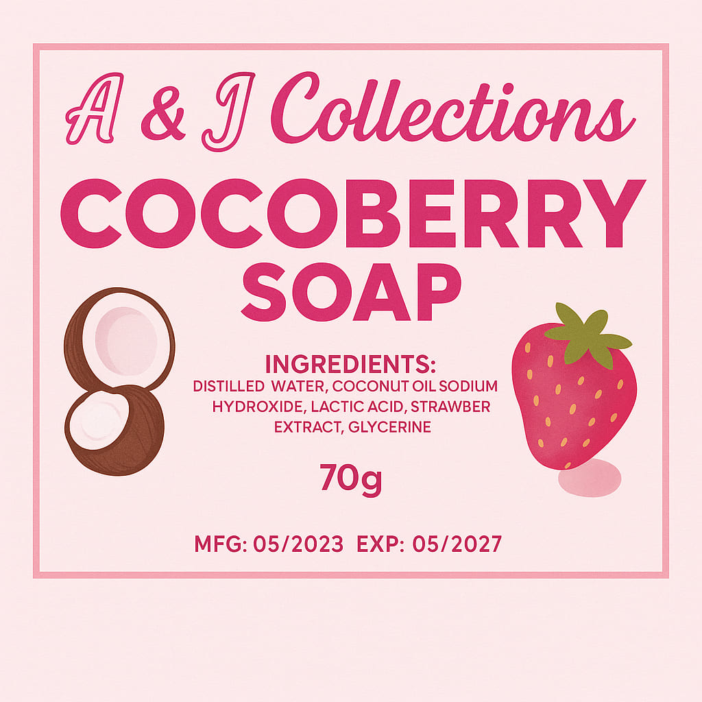

Cocoberry Soap

Smells like: A tropical breeze swirled with coconut milk and sun-sweetened berries.
Ingredients
- Distilled Water
- Coconut Oil
- Sodium Hydroxide
- Lactic Acid
- Strawberry Extract
- Glycerine
Skin Benefits
- Glow-boosting & brightening
- Ideal for dry, sensitive skin
- Natural berry scent
How To Use Cocoberry Soap
To use Cocoberry soap, first wet your skin, then lather the soap on your palms or a sponge. Gently massage the lather onto your body, and rinse thoroughly. For best results, some recommend leaving the lather on your skin for a few minutes before rinsing. Always perform a patch test and review the ingredients before full application.
- Wet your skin: Use lukewarm water to dampen your skin.
- Lather the soap: Apply the Cocoberry soap to your palms or a sponge and rub to create a rich lather.
- Massage onto your body: Gently massage the lather onto your skin, covering your entire body.
- Leave on (optional): For potential micro-peeling benefits, some suggest leaving the lather on for 3-5 minutes before rinsing.
- Rinse thoroughly: Rinse off all the soap residue with water.
- Follow up: Consider using Cocoberry serum lotion and sunscreen for enhanced results, according to Tess29BeautyProductsShop on Facebook.
- Patch test: Before full application, especially the first time, test the soap on a small area of skin to check for any adverse reactions.
- Discontinue if needed: If irritation or adverse reaction occurs, discontinue use and consult a doctor or pharmacist, as advised by theprettyglam.com.